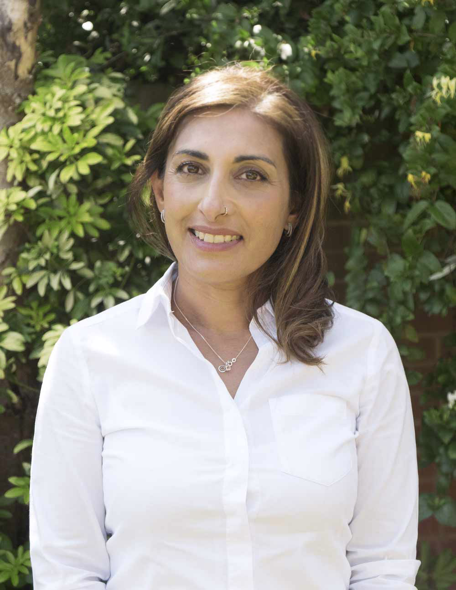

Learn to lower your anxiety
Counselling

Iffat Shafiuddin
I offer counselling to:
- Adolescents
- Adults
for short or long-term therapy via Google Meet.
About Me
Qualifications, Experience and Training
I qualified in 1997 and am an Accredited member of the British Association of Counselling and Psychotherapy (BACP).
You can find me on the BACP register here.
I have worked within various roles within Special Education Needs and
Disabilities (SEND), in Education (Further Education College and
Schools, both Primary and Secondary), with the National Society for the
Prevention of Cruelty to Children (NSPCC), Place2Be (Improving
Children's Mental Health in Schools), Your Healthcare (working with
children with Autism) within Domestic Violence projects (Women's Aid)
and Cruse Bereavement Care.
I have been counselling both adults and children for over 10 years and
have gained specialist experience and expertise in Neurodivergence such as Autism Spectrum Condition (ASC) particularly Asperger's and Attention Deficit and Hyperactivity Disorder (ADHD).
Specialisms
- ADHD Or VAST (Variable Attention Stimulus Trait)*
- Autism Spectrum Condition (Aspergers)
- Anxiety
- Identity
What to Expect
We'd start with an initial assessment for me to be aware of the
reason(s) for you (or your child) to want counselling and the nature of
difficulties, as well as for you to ask questions.
I'll also talk through the process of counselling.
Namely:
- I will not pressure you into talking
- You can bring issues within your own pace
- The process will be centred around your needs (hence the assessment process to identify your needs)
- The counselling is confidential.
The only exemption being that if you are a danger to yourself or others in which case I would follow the BACP Therapeutic Guidelines and Ethical Framework. This is standard practice and is part of my responsibility to you and can be explained further prior to commencement of therapy. I work within BACP's Ethical Framework found here.
I hold an enhanced DBS (Disclosure and Barring Service) certificate.
Fees
Fees are from £75 per session.
Please note each session lasts 50 minutes.Contact
Please feel free to contact me for further information or to book your first assessment session on:
- 07784777205
- Iffat.mbacp@gmail.com